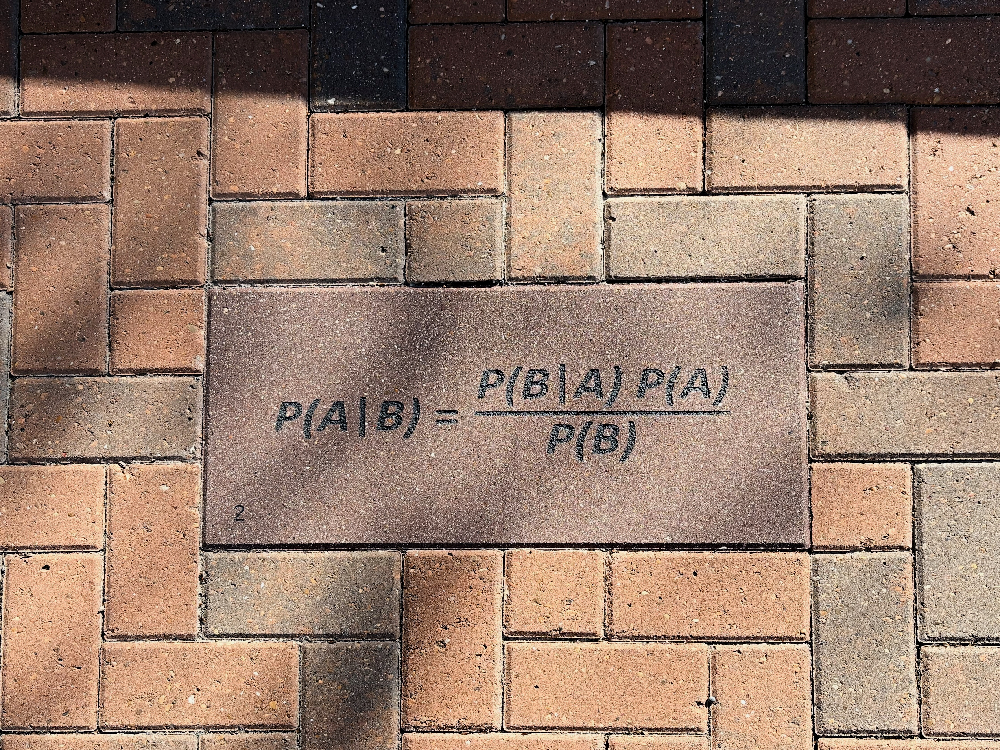

Fall 2026
In this course we’ll learn how to model decisions, risk, and preferences using Bayesian inference. We’ll explore how to make choices under uncertainty and how those choices differ from rational models. Drawing from economics, psychology, and management science, we’ll apply these ideas to engineering systems.
| Week | Dates | Tuesday | Thursday |
|---|---|---|---|
| 1 | 8/25–27 | Introduction, Probability | Bayes’s Theorem |
| 2 | 9/1–3 | Distributions | Estimating Proportions |
| 3 | 9/8–10 | Estimating Counts | Odds and Addends |
| 4 | 9/15–17 | Min., Max., and Mixture | Poisson Processes |
| 5 | 9/22–24 | Decision Analysis | Testing |
| 6 | 9/29–10/1 | Exam #1 | Comparison |
| 7 | 10/6–8 | Classification | Inference |
| 8 | 10/13–15 | Survival Analysis | Mark and Recapture |
| 9 | 10/20–22 | Logistic Regression | LR Continuation |
| 10 | 10/27–29 | Regression | Regression Continuation |
| 11 | 11/3–5 | Exam #2 | Project Intro and Coordination |
| 12 | 11/10–12 | Conjugate Priors | MCMC |
| 13 | 11/17–19 | Approx. Bayesian Computation | Work on the Project |
| 14 | 11/24–26 | Project Intermediate Review | Thanksgiving |
| 15 | 12/1–3 | Work on the Project | Project Report + Presentation |

"Risk comes from not knowing what you're doing." Warren Buffett
"Project success is not about avoiding risks but about making better decisions when they appear."
"It is not the strongest or the most intelligent who will survive but those who can best manage change and uncertainty." adapted from Charles Darwin
"Even one well-done observation will be enough in many cases, just as one well-made instrument often suffices for the establishment of a law." Émile Durkheim
Return home